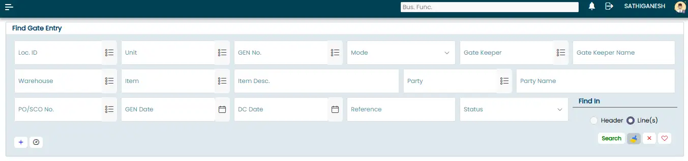
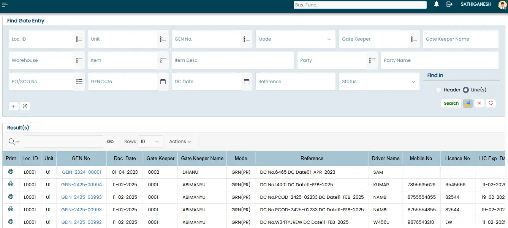
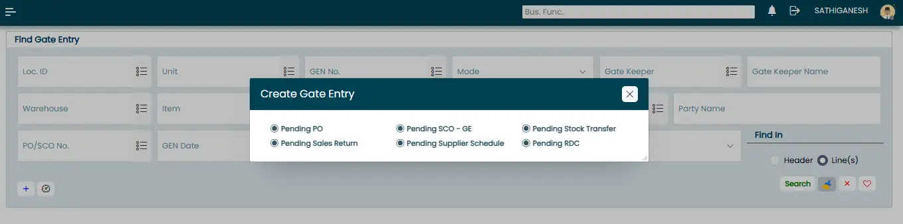
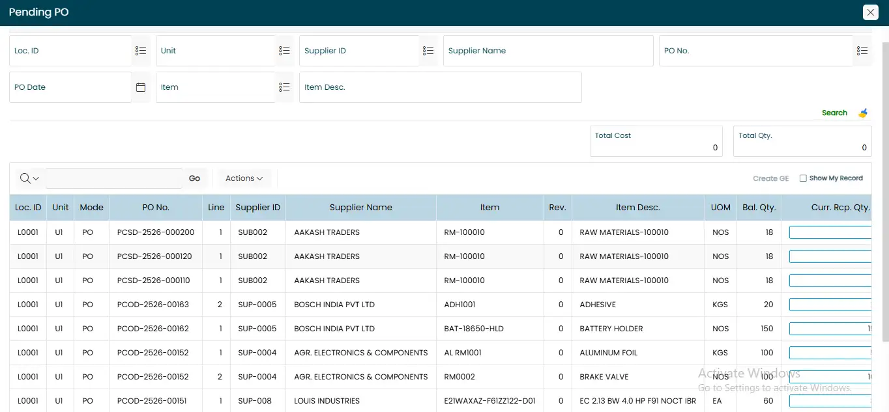
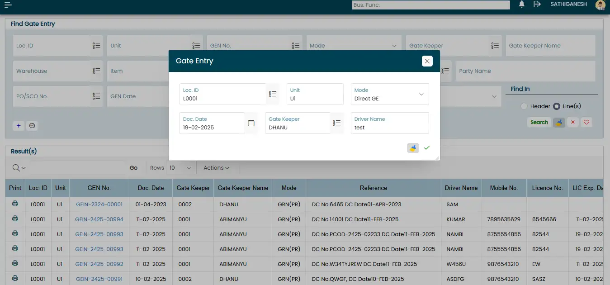
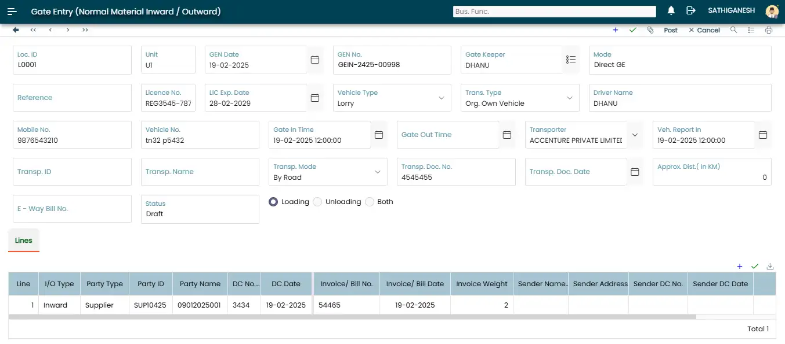
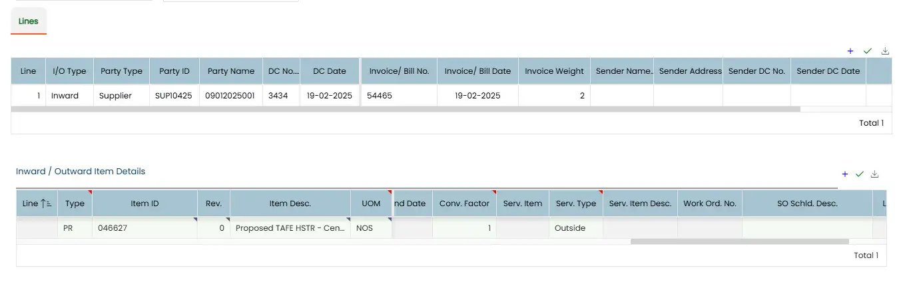
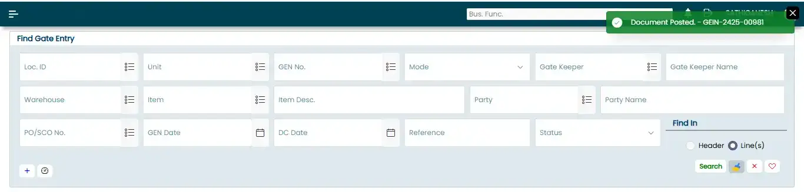

<div data-category="Gate Entry" data-title="Gate Entry Inward/Outward" data-updated="January 23, 2026" data-contributors="RoadmapIT" data-breadcrumb="Home,Gate Entry,Gate Entry Inward/Outward">
  <div class="page-content">
    <h5>Gate Entry Inward/Outward</h5>
    <p>Gate entry inward/outward refers to the processes of recording and managing the movement of goods, materials, and items entering (inward) or leaving (outward) a facility. These processes are crucial for maintaining accurate inventory records, ensuring security, and streamlining logistics</p>
    <p>This screen is used to record the Inward/Outward of the organization.</p>

    <h5>Navigation path:</h5>
    <p class="fs-6">Supply Chain \ Gate Entry \ Transaction \ Gate Entry Inward/Outward</p>

    
    <ul style="list-style-type: none; align-content: center">
      <li class="mouse-icon">Search screen displays the list of Gate entry with the relevant details and its status</li>
      <li class="mouse-icon">Click on Search to filter all the records</li>
    </ul>

    
    <ul style="list-style-type: none; align-content: center">
      <li class="mouse-icon">User can filter the respective documents by entering the search parameters at the header.</li>
      <li class="mouse-icon">Using Search, system displays the results relevant to the search parameters entered.</li>
      <li class="mouse-icon">On-click; the corresponding transaction record will be displayed.</li>
      <li class="mouse-icon">
        Using
        
        icon, entered search parameters can be cleared.
      </li>
      <li class="mouse-icon">
        To close the screen, use
        <i class="bi bi-x fs-4 mx-2 text-danger"></i>
        icon.
      </li>
      <li class="mouse-icon">
        Click
        <i class="bi bi-speedometer2 fs-4 mx-2 text-muted"></i>
        button to Direct Gate Entry document from PO, SCO, Stock transfer, sales return, supplier schedule, RDC
      </li>
    </ul>

    
    <ul style="list-style-type: none; align-content: center">
      <li class="mouse-icon">Select the necessary option</li>
    </ul>

    
    <ul style="list-style-type: none; align-content: center">
      <li class="mouse-icon">Select the document</li>
      <li class="mouse-icon">Click Create GE button to create the gate entry</li>
      <li class="">
        (or)
      </li>
      <li class="mouse-icon">
        Click
        <i class="bi bi-plus fs-4 mx-2 text-primary"></i>
        button to create Direct Gate Entry document by entering all the mandatory fields displayed in the Add dialog
      </li>
    </ul>

    
    <ul style="list-style-type: none; align-content: center">
      <li class="mouse-icon">Select Loc.ID.</li>
      <li class="mouse-icon">Select the Mode</li>
      <li class="mouse-icon">Select the Gate keeper from LOV</li>
      <li class="mouse-icon">Enter the driver Name</li>
      <li class="mouse-icon">Click <i class="bi bi-check-lg fs-4 mx-1 text-success"></i> to Save</li>
    </ul>

    
    <ul style="list-style-type: none; align-content: center">
      <li class="mouse-icon">Enter the License No.</li>
      <li class="mouse-icon">Select the License Exp date</li>
      <li class="mouse-icon">Enter the Mobile Number</li>
      <li class="mouse-icon">Enter the vehicle number</li>
      <li class="mouse-icon">Select / Enter the Gate In Time</li>
      <li class="mouse-icon">Enter the Transp Doc. No</li>
      <li class="mouse-icon">Click <i class="bi bi-check-lg fs-4 mx-1 text-success"></i> to Save the header</li>
      <li class="mouse-icon">
        Click
        <i class="bi bi-plus fs-4 mx-2 text-primary"></i>
        button to add the line
      </li>
      <li class="mouse-icon">Select Inward/outward type</li>
      <li class="mouse-icon">Select Party ID</li>
      <li class="mouse-icon">Enter DC No.</li>
      <li class="mouse-icon">Select DC date</li>
      <li class="mouse-icon">Enter Invoice/Bill No.</li>
      <li class="mouse-icon">Select Invoice/Bill date</li>
      <li class="mouse-icon">Click <i class="bi bi-check-lg fs-4 mx-1 text-success"></i> to Save</li>
    </ul>

    
    <ul style="list-style-type: none; align-content: center">
      <li class="mouse-icon">
        Click
        <i class="bi bi-plus fs-4 mx-2 text-primary"></i>
        button to add the Inward/Outward Item Details
      </li>
      <li class="mouse-icon">Select Type</li>
      <li class="mouse-icon">Select Item ID</li>
      <li class="mouse-icon">Select UOM</li>
      <li class="mouse-icon">Enter Gross weight, Qty, Tare weight</li>
      <li class="mouse-icon">Enter Unit cost</li>
      <li class="mouse-icon">Enter Match qty</li>
      <li class="mouse-icon">Enter Excess qty</li>
      <li class="mouse-icon">Select the prod UOM</li>
      <li class="mouse-icon">Enter the Tolr % and Tolr qty</li>
      <li class="mouse-icon">Enter Conv.Factor</li>
      <li class="mouse-icon">Enter Serv.Type</li>
      <li class="mouse-icon">Click <i class="bi bi-check-lg fs-4 mx-1 text-success"></i> to Save</li>
      <li class="mouse-icon">Click on post button and the document will be posted</li>
    </ul>
    
  </div>
</div>